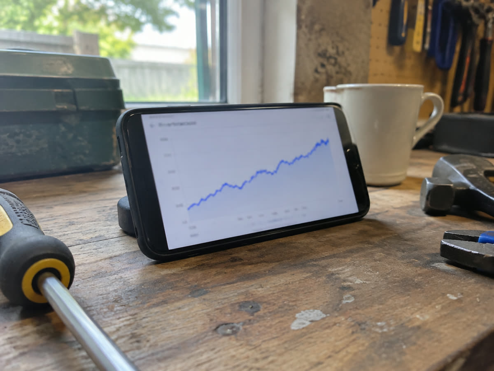
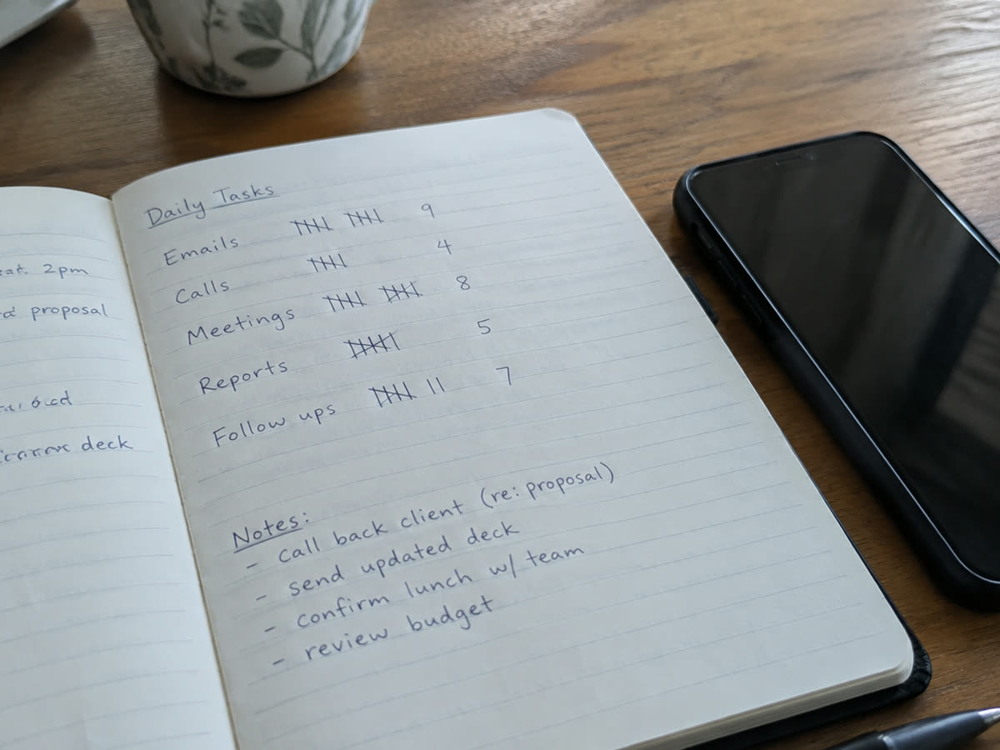

Welche Zahlen wirklich zählen
Nach dem ersten Monat kommt die Frage, ob es etwas bringt. Beantwortet wird sie meist mit der falschen Zahl.
Nach dem ersten Monat kommt die Frage, ob es etwas bringt. Beantwortet wird sie meist mit der falschen Zahl: der Followerzahl. Sie ist die sichtbarste und die am wenigsten aussagekräftige. Es gibt vier Werte, die tatsächlich etwas sagen, und sie stehen alle in den Statistiken eines Geschäftskontos.

Wie lange zugesehen wird
Die wichtigste Zahl überhaupt. Beide Plattformen zeigen die durchschnittliche Wiedergabedauer und eine Kurve, an der Sie ablesen können, wo Leute abspringen.
Fällt die Kurve in den ersten zwei Sekunden steil ab, liegt es am Anfang. Fällt sie in der Mitte, ist das Video zu lang oder es passiert zu wenig. Bleibt sie bis zum Ende oben, haben Sie ein Format gefunden, das Sie wiederholen sollten.
Diese eine Kurve ersetzt die meisten Ratschläge, weil sie Ihr Publikum beschreibt und nicht den Durchschnitt aller. Siehe auch Die ersten zwei Sekunden.
Wie viele Zuschauer Ihnen nicht folgen
Dieser Anteil zeigt, ob Sie neue Leute erreichen oder immer denselben Kreis. Bei einem gesunden Reel liegen die meisten Aufrufe deutlich außerhalb der eigenen Follower, oft über achtzig Prozent.
Ist der Anteil dauerhaft niedrig, wird Ihr Video kaum weitergetragen. Dann liegt es meist am Thema: zu speziell, zu sehr nach innen gerichtet, zu sehr Werbung. Warum Follower dabei kaum eine Rolle spielen, steht unter Reichweite ohne Follower.

Gespeichert und geteilt
Likes sind billig. Sie kosten einen Tipper und bedeuten wenig. Gespeichert und weitergeschickt dagegen bedeuten, dass jemand das Video später wiederfinden oder einer bestimmten Person zeigen wollte.
Für einen Betrieb ist das die ehrlichste Form von Interesse. Ein Video, das oft an Einzelpersonen geschickt wird, hat sehr häufig eine konkrete Anfrage zur Folge, auch wenn die Aufrufzahl unauffällig ist.
Profilaufrufe und Klicks auf den Link
Am Ende der Kette steht die Frage, ob aus Zuschauern Interessenten werden. Profilaufrufe zeigen, wie viele nach dem Video wissen wollten, wer dahintersteht. Linkklicks und Tipps auf Anruf oder E-Mail zeigen, wie viele den nächsten Schritt gemacht haben.
Wenn die Videos laufen, aber hier nichts passiert, liegt es fast immer am Profil oder am fehlenden Schlusssatz im Video. Was ins Profil gehört, steht unter Das Profil einrichten.
Die Zahl, die alles schlägt
Keine der obigen Zahlen ist so wichtig wie diese: Wie viele Anfragen sind gekommen, und woher kamen sie?
Dafür brauchen Sie keine Technik, nur eine Angewohnheit. Fragen Sie jeden neuen Interessenten, wie er auf Sie gekommen ist, und schreiben Sie es auf. Nach drei Monaten haben Sie eine Antwort, die kein Diagramm liefern kann.
Rechnen Sie dabei ehrlich: Manche sehen ein Reel und rufen erst Wochen später an, oder sie suchen danach bei Google nach Ihrem Namen. Diese Anfragen tauchen in keiner Statistik der Plattform auf, gehören aber dazu.
Worauf Sie im ersten Monat nicht schauen sollten
Auf die Followerzahl. Auf einzelne Ausreißer nach oben oder unten. Und auf Vergleiche mit Profilen aus anderen Branchen.
Beurteilen Sie nach zwei bis drei Monaten und anhand der Entwicklung, nicht anhand einzelner Videos. Was in einem Bericht stehen sollte, damit er etwas nützt, steht unter Veröffentlichung und Zahlen. Den ersten Monat bekommen Sie ohne Rechnung, samt Zahlen am Ende.


Monat eins, 100 % kostenlos.
Wir drehen, schneiden und veröffentlichen einen Monat lang. Ohne Rechnung, ohne Kündigungsfrist.